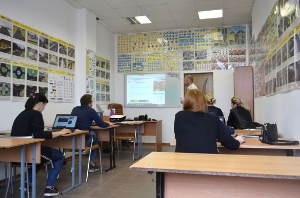

Diploma in Computer Science
A six month long Diploma in Computer Science is highly valued today, among the young generation for its work/ job oriented approaches, syllabuses. After completing SSC, a student can join in this course and receives the status of a Diploma, from where they can enter the job field so easily. SayedTechSolution is one of the best institute of Bangladesh which provides IT education with ensuring quality.
Module
Module 1: Basic Programming with C
Module 2: Data Structure and Algorithm
Module 3: Data Communication
Module 4: Compiler Design
Module 5: Database Management System
